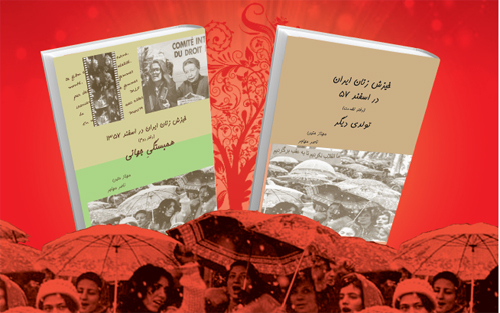
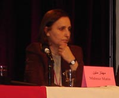
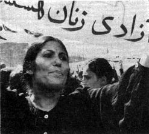
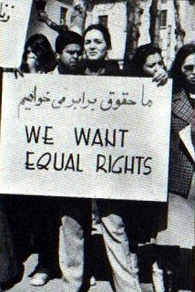

|
|

اگر آنها می دانستند چقدر چشم دنبال آنهاست*
مصاحبه سیما حسین زاده با مهناز متین نویسنده کتاب خیزش زنان در اسفند 57
پنج شنبه22 فروردین 1392

تغییر برای برابری - اخیرا کتابی روانه بازار شده است که اسناد، مدارک و روایتهای موجود در آن می تواند بسیاری از نقاط تاریک حرکت اعتراضی زنان ایران در اسفند 57 علیه حجاب اجباری را برای علاقه مندان به مطالعه در تاریخ جنبش زنان ایران روشن سازد.

حرکت اعتراضی زنان در اسفند 57 در طی شش روز و با شرکت زنان از هر قشری که اغلب کارمند ادارات همچون پرستاران، آموزگاران بودند انجام شده است. در بین این زنان حتی زنان خانه داری نیز بوده اند که هنگام انجام امور روزمره خود در خارج از خانه ، شاهد آزار و اذیت دختران جوان توسط نیروهای حزب اللهی بوده و سعی در کمک کردن به آن زنان به این حرکت پیوسته اند. این حرکت نه تنها در تهران بلکه در برخی شهرهای دیگر همچون سنندج، تبریز، آبادان و... نیز صورت گرفته است. در ماه گذشته کتاب "خیزش زنان ایران در اسفند 57 " در دوجلد 1000 صفحه ای توسط مهناز متین و ناصر مهاجر اخیرا توسط نشر نقطه در شهر کلن آلمان به چاپ رسیده است. عنوان جلد اول این مجموعه، تولدی دیگر و جلد دوم، همبستگی جهانی است. در نشستی که به دعوت دکتر شهرزاد مجاب و به مناسبت چهلمین سال تاسیس رشته مطالعات زنان در دانشگاه تورنتو برگزار شد مهناز متین و ناصر مهاجر نویسندگان این کتاب به معرفی آن پرداختند..گفتگویی که در پی می آید مصاحبه با مهناز متین یکی از نویسندگان این کتاب در حاشیه این نشست است.
برای شروع اجازه بدهید بپرسم چه شد که دست به انجام چنین تحقیق مفصلی زدید و در واقع انگیزه اصلی تان از نوشتن آن چه بوده است؟
چند ماه قبل از سی امین سالگرد تظاهرات زنان علیه حجاب اجباری در اسفند 57 بود که به فکر نوشتن مقاله ای در مورد این حرکت افتادیم و فکر کردیم کاری در جهت بازسازی و بازبینی این خیزش انجام دهیم که در واقع یک کار اسنادی باشد که بتوانیم تصویری واقعی از آن روزها ارائه دهیم. بنابراین شروع به گردآوری اسناد و مدارک آن زمان کردیم که همان موقع متوجه شدیم به دلیل فضای بازی که برای رسانه های آن موقع وجود داشت و چون فقط چند هفته ای از انقلاب 57 گذشته بود پس همچنان خبرنگاران خارجی در ایران حضور داشته اند، بنابراین خبرهای این اتفاق را خوب پوشش داده بودند و توانسته بودند حتی در نشریات اروپایی مخصوصا فرانسه، انگلیس و آمریکا چند روز پشت سر هم گزارش و اخبار را بازتاب دهند. ضمن اینکه حین جستجوی اطلاعات و مدارک و اسناد وقتی که با حجم زیادی ازکارهایی که درهمین ارتباط حتی در سالهای بعد از آن انجام شده بود، مواجه شدیم تصمیممان مبنی بر مقاله نویسی تبدیل به نگارش کتاب شد. پس از این بود که تصمیم بر آن شد فقط به اخبار و گزارشهای روزنامه ها بسنده نکنیم و به سراغ افرادی برویم که شخصا در تظاهرات اسفند 57 علیه حجاب اجباری شرکت داشتند. همانطوری که می دانید در آن زمان دو اتفاق با هم همزمان شد یکی برنامه ریزی گروههای مختلف برای برگزاری 8 مارس و دیگری سخنرانی آیت الله خمینی در قم در مورد پوشش زنان در ادارات بود که باعث شد بسیاری از زنان کارمند در اعتراض به آن بپا خیزند ما در این کتاب تلاش کردیم رنگین کمانی از زنان را بازتاب بدهیم که به نوعی در آن دوره با هم تلاقی داشتند و شرکت کرده بودند. به هرحال با محدودیتهایی نیز مواجه بودیم. دسترسی به بسیاری از زنانی که در این خیزش شرکت داشتند و امروز در چهار گوشه دنیا پراکنده اند کمتر بود اما در حد امکان توانستیم با تعدادی از آنها ارتباط برقرار کنیم و اسناد و روایتهایشان را گردآوری کنیم.. از طرفی هم با کسانی که در برنامه ریزی برای برگزاری هشت مارس شرکت داشتند گفتگو کردیم. دوست داشتیم بدانیم آنها در آن زمان چه درک و دریافتی از این خیزش داشتند. به هر حال در آن زمان سازمان مستقل زنانی هنوز وجود نداشت و اکثر افرادی که برای برگزاری 8مارس تلاش می کردند گرایشات سیاسی داشتند و در واقع در آن زمان به شکل امروز صحبت از سازمانهای مستقل زنان وجود نداشت که فقط در حوزه زنان فعالیت داشته باشند. بیشتر زنان فعال آن زمان گرایشات سیاسی داشتند و به طور مستقیم و غیر مستقیم به سازمانهای سیاسی وابسته بودند.
پس به نظر شما واقعا سازمان و یا تشکل مستقل زنان وجود نداشت؟
ببینید چند تشکل وجود داشت که گفته می شد تشکل زنان محسوب می شوند و بر طبق دو گزارشی که روزنامه آیندگان (خرداد 57 )از تمام تشکلهای زنانی که در آن دوره وجود داشتند و تمام کسانی که با آیندگان گفتگو کردند همه اعتقاد دارند که ما مستقل هستیم اما هنگام مراجعه به نوشته های آنها در آن زمان و اسنادی که از فعالیتهایشان بجا مانده و البته با توجه به استقلال و آگاهی که امروز در سازمانهای زنان وجود دارد ما نمی توانیم بگوییم آنها کاملا مستقل بودند. بعضی از سازمانهای مستقل بعدها به وجود آمدند مثل اتحاد ملی زنان که حتی امروزو با تعاریف کنونی این اتحاد را هم نمی توانیم بگوییم مستقل بود. به هر حال اغلب آنها گرایشی به سمت چریکهای فدایی خلق داشتتند. حتی تشکیلات زنان حزب توده هم که از قدیم وجود داشت هم به نوعی مستقل محسوب نمی شد.
برگردیم به کتاب و اتفاقی که در اسفند 57 افتاد!
این زنانی که در کتاب با آنها مصاحبه انجام شده آن زمان درگیر برنامه ریزی برای برنامه 8 مارس بودند و اغلب از خارج از کشور آمده بودند که هشت مارس را اینبار در داخل ایران برگزار کنند. همه این برنامه ریزی ها قبل از اظهارات آیت الله خمینی در مورد اجباری شدن حجاب بود که انجام شده بود و ربطی به 6 روز خیزش زنان علیه حجاب اجباری نداشت که یکباره از طرف بسیاری از زنان کارمند، پرستار، آموزگار، دانشجویان ،دانش آموزان و حتی زنان خانه داری که در کوچه و خیابان برای انجام کارهای روزمره خود مثل خرید بودند اتفاق افتاد.. ما موقع گردآوری اطلاعات برای این کتاب و مصاحبه با آنها به دنبال درک آنها از این اتفاق و مساله زن در آن دوره بودیم . همینطور ما با زنانی که اتحاد ملی زنان را به وجود آوردند هم صحبت کردیم و همانطوری که می دانید اتحاد ملی زنان در آن موقع اسفند 57 شکل نگرفته بود این زنها که آن زمان در ایران بودند در صحبتهای خود ابراز کردند که هیچ خبری از چنین اتفاق گسترده ای نداشتند. در بین اسنادی که وجود دارد فقط یک گروه از تروتسکیستها هستند که از 10 سال قبل از انقلاب و بیشتر در بحبوحه انقلاب به مساله زن توجه بیشتری داشتند که الان فرصت بحث در مورد چرایی و چگونگی آن نیست اما دوست دارم اشاره کنم که در جلد اول این کتاب در یک مقاله مفصلی به این موضوع پرداخته ام. در یک کلام مساله زن و یا در واقع ستم جنسیتی برای اغلب این گروهها دغدغه نبود و خیلی به آن بها نمی دادند به غیر از گروه تدارکات هشت مارس که بعدها به کمیته دفاع از حق زن وابسته به حزب کارگران سوسیالیست معروف شدند که آنها هم عضوی از موج انترناسیونال 4 بودند وبیشتر از همه، اینها بودند که به مساله زن توجه می کردند. بقیه گروهها درک و دریافتی ابتدایی از ستم جنسیتی داشتند و به همان شکل کلاسیک می خواستند مراسم 8مارس را برگزار کنند. بنابراین اگر بخواهیم گفتگوهای انجام شده را دسته بندی کنیم از دو گروه می توانیم نام ببریم؛ یک-گروهی از زنان که در آن حرکت شرکت داشتند دو-گروهی که در آن دوره فعال حقوق زنان بودند با هر درک و دریافتی که نسبت به این مساله داشتند.
در ادامه کار متوجه شدیم که این حرکت شور و شوق گسترده ای در بین فمینیستهای اروپایی و امریکایی به وجود آورده اما بیشتر از همه در کشور فرانسه بازتاب داشته است. با توجه به اینکه ما هم در فرانسه زندگی می کنیم به بخش قابل توجهی از منابع دسترسی پیدا کردیم. هم فیلمی که تهیه شده بود و هم کمیته ای که به نام دفاع از حق زنان به ریاست سیمون دوبووار تشکیل شد و ده روز بعد از این حرکت گروهی از همین کمیته به ایران رفته بود و با تماسهای ما و ارتباطی که ایجاد کردیم باعث شد اسنادی در اختیار ما گذاشته شود. به شکلی که همین موضوع هم عنوانی شد برای تدوین کتابی دیگر که در واقع دفتر دوم همین مجموعه دوجلدی با عنوان همبستگی جهانی است که این جلد دربرگیرنده بررسی نشریات مرتبط با خیزش است به اضافه اسنادی که این گروهها به ما دادند و گفتگو با زنانی که در ارتباط با این موضوع به ایران رفتند. اینها عمدتا فرانسوی بودند اما در بین آنها زنانی از آلمان، یک زن فیلمسازاز مصر هم بود که در مجوع حدود 18 نفر را تشکیل می دادند که تقریبا 4 روز در ایران اقامت داشتند و با یک سری از مقامات گفتگوهایی انجام دادند. همان موقع گزارشی هم نوشتند اما این گزارش به دلایلی که حتی خود این افراد هم پس از گذشت سالهای زیاد از این حرکت نمی دانند هیچ وقت چاپ نشد و حتی به فارسی هم ترجمه نشد. من سالها پیش که نه برای این کتاب بلکه به دلیل دیگری به مرکز اسناد زنان پاریس مراجعه کرده بودم به نسخه ای از این گزارش برخوردم که موقع شروع به انجام این کار بر آن شدیم که از این گزارش هم استفاده کنیم. به هرحال سند مهمی بود که در آن گفتگوهایی با مهندس بازرگان، آیت الله طالقانی و صادق قطب زاده و همینطور با تعدادی از زنان، درست در همان موقع تاریخی انجام شده بود و می توانست کمک زیادی به ما کند. ضمن اینکه چندین نشریه نیز در آن دوره به چاپ رسید که حاوی گزارشهای مفصلی در این باره بودند. تمام اینها به فارسی ترجمه شد و درواقع دفتر دوم این مجوعه را شکل داد.
فکرکنم بد نباشد توضیح مختصری در مورد چگونگی شروع این حرکت بدهید تا یک تصویر کلی به مخاطبان داده باشیم.
ببینید شروع این حرکت در واقع واکنشی بود نسبت به اظهارات آیت الله خمینی در قم در مورد پوشش زنان در ادارات که دقیقا دو روز قبل از 8 مارس 57 ایراد شده بود. این صحبتها که روز بعد در روزنامه ها منتشر شد همزمان شد با آزار و اذیت و برخورد شدید نیروهای حزب الله با زنان نه فقط در ادارات بلکه همچنین در خیابانها مبنی براینکه زنان باید پوشش اسلامی داشته باشند. همان روز که 16 اسفند بود زنان موقع ورود به ادارات نیز با برخورد بد همین نیروها مواجهمی شوند که آنها را مجبور به داشتن حجاب میکردند. در پی همین برخوردها بود که بسیاری از این زنان نمی توانستند به راحتی تن به خواسته کسانی بدهند که آنها را از ابتدایی ترین حق آنها -حق انتخاب پوشش- محروم می کردند. به هرحال مساله حجاب در ذهنیت ما ایرانی ها به دلیل ماجرای کشف حجاب با بسیاری از کشورهای منطقه متفاوت است و سابقه چندین و چند ساله دارد. همین تاریخ پرماجرای حجاب نیز باعث شده بود که بیشتر از چند دهه زنان ایرانی با این مساله درگیر باشند و حساسیت زیادی نسبت به این مساله از خود نشان دهند. به ویژه در بین زنانی که می توان گفت در یک دوره ی صد ساله به تدریج توانسته بودند تواناییهایی کسب کرده و تحصیلاتی داشته باشند و بتوانند با کار کردن به نوعی استقلال برای خود کسب کنند و نمی توانستند تحمیل حجاب اجباری را به راحتی بپذیرند و به همین دلیل هم واکنش بلافاصله ای نسبت به سخنان خمینی نشان دادند.

به نظر شما و با توجه به جستجویی که در بین اسناد و مدارک و اطلاعات مرتبط با این حرکت برای نگارش این کتاب داشته اید این حرکت تا چه میزان آگاهانه بود؟
به هر حال تاحدی آگاهی وجود داشت و به نوعی با توجه به اقداماتی که از قبل هم آغاز شده بود زنان از اینکه محدودیتهای بیشتری اعمال خواهد شد احساس خطر می کردند. از اقداماتی که از قبل شروع شده بود می توان به لغو قانون حمایت خانواده و ممنوعیت سقط جنین اشاره کرد که به هرحال حساسیت بسیاری از زنان را از قبل برانگیخته بود و نگرانیهای آنها را بیشتر کرده بود به این معنا که با اجباری شدن حجاب، تحمل آنها سرریز شده و واکنش نشان دادند. روز پنج شنبه که روز اول این تظاهرات بود باتوجه به انعکاس صحبتهای آیت الله خمینی در روز قبل در روزنامه ها و رادیو، زنان کارمند از طریق شبکه های ارتباطی داخل ادارات که از پیش ودر زمان انقلاب در قالب شورا یا کمیته و غیره به وجود آمده بود، با همدیگر ارتباط گرفتند و تصمیم گرفتند که پاسخی به این قضیه بدهند. از آنجایی که از چند هفته قبل مشخص بود که مراسم روز جهانی زن همچون بسیاری دیگر از گردهمایی ها در دانشگاه تهران برگزار می شود، تعدادی از این زنان به سمت دانشگاه می روند و از زنانی که در دانشگاه هستند می خواهند که به آنان بپیوندند و به خیابان بروند. اما از آنجایی که از پیش برنامه مشخصی برای این تظاهرات خیابانی وجود نداشت نوعی سردرگمی بر فضا حاکم بود.عده ای می گفتند برویم دانشگاه، عده ای به سمت ساختمان رادیو تلویزیون وحتی عده ای خواستار این بودند که به مقابل دفتر سازمان فداییان بروند گویا قرار است اشرف دهقانی آنجا سخنرانی کند که البته سخنرانی هم نکرد. انواع و اقسام ابتکارات مطرح می شد به دلیل اینکه هیچ شخص یا گروهی لااقل در روز اول و دوم رهبری و هدایت این جریان را بر عهده نداشت یا در واقع نمی توانست داشته باشد چون گروههای زنانی که وجود داشتند گروههایی چهل پنجاه نفره بودند و یا کسانی بودند که تازه کارشان را شروع کرده بودند و توانایی رهبری یک جنبش را نداشتند. شما آن روزهای انقلاب را تجربه نکرده اید ولی به هر حال وضعیت اینطور بود که مثلا عده ای می گفتند فردا فلان جا جمع شویم و همه می رفتند.کسی هم نمی پرسید چرا. در آن فضای انقلابی مردم حضور داشتند و پیگیر مسائل بودند واصلا اخبار به همین طریق در دوره انقلاب پخش می شد. به همین دلیل وقتی اعلام شد که شنبه به دادگستری برویم همه موافقت کردند چرا که مردم خیلی فعال بودند و حضور داشتند. علاوه بر این گروهی از زنان حقوقدان هم بودند که بسیار فعال و جدی بودند. این زنان حقوقدان از همان زمان که اعلام شده بود که قرار است قانون حمایت از خانواده لغو شود حساسیتشان جلب شده بود و حتی در روزنامه ها مقالاتی هم نوشته بودند. زمانی که مطرح شد که در مقابل دادگستری تجمع برقرار شود زنان حقوقدان اعلام کردند که قطعنامه ای هم نوشته شود و خواستهای زنان مطرح گردد که در نهایت قطعنامه بسیار خوبی هم از آب درآمد. پس از تجمع روز شنبه در دادگستری، باز هم بدون اینکه دقیقا مشخص باشد چه کسانی تصمیم گرفته اند، قرار می شود روز دوشنبه تظاهراتی از دانشگاه تهران تا میدان آزادی انجام گیرد. به نظر می رسد تصمیم این تظاهرات در همان روز شنبه گرفته شده باشد یا توسط همان کمیته دفاع از حق زن که گفتم گرایشات تروتسکیستی داشتند. در هر حال اعلامیه ها را همین گروه پخش کرده بودند.
آیا اعلامیه اش موجود هست؟
بله اعلامیه اش موجود هست و در کتاب آمده است.
در این اعلامیه خواسته شد که به سمت دانشگاه برویم و در آنجا جمع شویم تا بعد به سمت میدان آزادی راهپیمایی کنیم. می شود گفت آن موقع دولت نوعی عقب نشینی داشت اما توصیه کرد که زنان حجابشان را رعایت کنند چون ایران یک کشور اسلامی است. در پی آن، صحبتهای آیت الله طالقانی پخش شد که در سخنانش ادعا کرد حجاب اجباری نیست. اما به نظر می رسد این سخنان که تیتر اول اغلب روزنامه ها شد وبه شکلی از طرف روزنامه ها انعکاس یافت که فقط بتوانند اوضاع را آرام کنند و نوعی تیتر زدند که خیال مردم را راحت کنند اما وقتی مطلب اصلی روزنامه ها را می خوانید هیچ صحبتی مبنی بر اینکه حجاب اجباری نخواهد شد نیست و فقط مثلا گفته اند حجاب اجباری به معنای چادر نیست و زنان به نوعی باید حجاب اسلامی را رعایت کنند و بحثی در ارتباط با اختیار زنان در انتخاب پوشش وجود نداشته است. به هر حال مجموع این عوامل باعث شد که زنان فکر کنند اینها عقب نشینی کردند و حجاب اجباری نخواهد شد و ما به یک معنایی در حرکت خود موفق شدیم و همین هم سبب شد تا برخی زنان از جمله انجمن حقوقدانان اعلامیه ای صادر کنند با این محتوا که دولت عقب نشینی کرد ودیگر کافی است. بنابراین می توان گفت زنان این آگاهی را داشتند که باید این حرکت ادامه پیدا کند
ممکن است مثال مشخصی از این آگاهی به وضعیت در میان زنان بزنید؟
مثلا برخی از زنان کارمندی که با آنها مصاحبه کردیم و سوال پرسیدیم که آیا برای شما کافی بود؟ می گفتند نه واقعا کافی نبود. اما باید درنظر داشته باشیم که در آن دوره بسیاری از زنان کسانی بودند که در انقلاب و جنبش ضد دیکتاتوری شرکت داشتند و این ترس بود که اگر الان کسانی به خیابان بیایند کسانی هستند که ضدانقلاب هستند و این امر نگران کننده بود و این افراد دوست نداشتند به آنها ضدانقلاب گفته شود. در واقع همه نگران بودند و فکر می کردند که اگر این حرکت زنان ادامه پیدا کند همه چیز غیر قابل کنترل خواهد شد و ممکن است عاملی برای سواستفاده طرفداران بختیار و یا ضد انقلابها و یا آمریکا از این مساله شود. به هر حال این وحشتی بود که یا وجود داشت و یا به وجود آورده بودند که از طرف بسیاری از روشنفکران نیز بیان شد مثل خانم ناطق که روز بعدش به دانشگاه رفتند و گفتند دولت عقب نشینی کرده پس دیگر بس است و تمامش کنیم. در حالی که به نظر می رسید هنوز این نگرانی در پایه این جنبش که زنان کارمند هستند کامل برطرف نشده بود.ولی مجموعه ای و اراده ای از طرف روشنفکران و سازمانهای سیاسی وجود داشت که این داستان را تمام کنیم چون اگر ادامه پیدا کند در نهایت به نفع امپریالیسم و ضد انقلاب خواهد شد. به همین دلیل هم در روز آخر که قرار بود راه پیمایی از سمت دانشگاه تهران به سمت میدان آزادی باشد اینها دوساعت فقط در دانشگاه بحث کردند و بسیاری از گروههای سیاسی اعتقاد داشتند که نباید برویم. یک اشاره ای هم می خواهم به ماجرای روز قبل داشته باشم که به سمت صادق قطب زاده تیراندازی شد ه بود . هر چند بعدها شخص قطب زاده تکذیب کرد اما همان روز بسیاری از روزنامه ها از جمله آیندگان که از اول جزء موافقین این حرکت بود نوشتند که این حرکت به سمت خشونت کشیده می شود و باید تمام کرد . به هر حال در مجموع می توان جو آن زمان را تصور کرد که زنان در خیابان کتک می خوردند و از طرفی پاسدارها اسلحه حمل می کردند و سازمانهای سیاسی نیز ترس از سوءاستفاده ضد انقلاب داشتند. بنابراین مجموع این عوامل باعث شد که بسیاری از افراد خود بخود منصرف شوند مخصوصا این که واقعا زنان در خیابانها کتک می خوردند و تعدادی نیز چاقو خوردند که دلایلی کافی بر انصراف بودند. از طرفی دولت هم گفته بود ما نمی خواهیم حجاب را اجباری کنیم و این ماجرا تمام شد. به نظر من اگر این هوشیاری در سازمانهای زنان و سازمانهای سیاسی چپ، و روشنفکران سکولار وجود داشت و دست به کنکاش درست مطالب چاپ شده روزنامه ها می زدند حتما متوجه می شدند که حرفی مبنی بر اختیاری بودن پوشش زنان از طرف دولت زده نشده واین به نظر من بسیار نکته عجیبی ست. در مجموع تمام عوامل دست به دست هم دادند که این حرکت خاموش شود و دوسال بعد حجاب به صورت رسمی اجباری شد و حرکت دیگری برای جلوگیری آن شکل نگرفت. یکی از دلایل نبود مقاومت هم اعمال سرکوب بیشتر ، انشعاب در داخل احزاب سیاسی و مثلا بسته شدن روزنامه آیندگان در سال58 به عنوان یکی از حامیان حرکت زنان در اسفند 57 باشد که دیگر کسی اهمیتی به این مساله نمی داد و در واقع جزء اولویتها به شمار نمی رفت.
خانم متین با توجه به صحبتهای شما و معرفی که از کتاب داشتید به نظر می رسد به یک معنا می توان گفت در این کتاب یک جریان قوی وجود دارد که می توان آسم آن را خود انتقادی گذاشت در واقع انتقاد از سازمانهای پیشرو چپ سیاسی که به هر حال هم شما و هم آقای مهاجر از اعضای این سازمانها بودید. لطفا کمی در این مورد توضیح بدهید و اینکه دید امروز شما با توجه به فاصله ای که از آن دوره گرفته اید چیست؟
من به عنوان کسی که در مقطع انقلاب دانشجو و یکی از هواداران سازمانهای چپ بود می توانم بگویم که تقریبا هیچ خاطره ای از این حرکت در ذهن نداشته ام و تا زمانی که از ایران خارج شدم به این مساله توجهی نمی کردم. تقریبا اکثر فعالین سازمانهای چپ همین گونه بودند. البته استثناهایی هم وجود داشت که به این مساله حساسیت داشتند اما در کل یک نگاه منفی نسبت به این حرکت زنان وجود داشت و اعتقاد بر این بود که مساله حجاب مساله زنان زحمتکش نیست و متاسفانه هنوز هم به نوعی این نگاه وجود دارد. در نتیجه این سازمانها که تفکرات چپ کلاسیک داشتند عمدتا مشکلات دیگر برای آنها از اولویت برخوردار بود . به جز گروهی از این سازمانها که گرایشات تروتسکیستی داشتند و به مساله زنان توجه می کردند، سازمانهای دیگری همچون سازمان فداییان خلق و یا سازمان پیکار یا سازمانهای معروف به خط سه بیشتر این دید را داشتند کما اینکه در نشریات خود نیز همان دید منفی را حتی یکسال بعد از این حرکت و به مناسبت 8 مارس نسبت به سال قبل داشتند. اما با وجود تمام اینها می بینیم که بخشی از زنان و حتی مردان این گروهها در این حرکت شرکت داشتند یعنی آنها این حساسیت را داشتند ولی نمی توانیم از یک موضع مشخص و مشترک بین اعضا و هواداران این سازمانها صحبت کنیم. موضع رسمی و غالب رهبری این سازمانها نسبت به این حرکت منفی بود و موافق چنین حرکتی نبودند. با وجود اینکه اعتقاد به برابری جنسیتی داشتند و می گفتند حجاب به هیچ وجه نباید اجباری باشد اما در مورد حرکت زنان علیه اجباری شدن حجاب اعتقاد داشتند که این مساله اهمیتی ندارد و در بین تمام مشکلاتی که در این مقطع تاریخی وجود دارد ما نمی توانیم به آن بپردازیم.اما باز هم بسیاری از اینها در این حرکت شرکت کردند.
پس در مجموع می توان گفت در آن دوره، جامعه ایران به ویژه زنان فعال و حتی فعالان سیاسی به این بلوغ نرسیده بودند که مساله ستم جنسیتی به اهمیت ستم طبقاتی است. چیزی که امروز هم می توان گفت به نوعی همچنان از طرف فعالین سیاسی نسبت به جنبش زنان و حقوق زنان دیده می شود و ما کم و بیش شاهد تفکر مردسالارانه در جریان تغییر و تحولات جامعه هستیم.
بله دید غالب در آن دوره همین بود اما استثنائاتی نیز وجود داشت.
آیا این استثنائاتی که به آن اشاره می کنید در حدی بود که برجسته باشند و در واقع می خواهم سوال بعدی را به این شکل مطرح کنم که آیا زنان در حرکت اسفند 57 از حمایت مردان جامعه برخوردار شدند؟
به هر حال مردانی وجود داشتند که حمایت می کردند اما اگر امروز و شرکت مردان در کمپین یک میلیون امضا را نگاه کنیم که حتی کمیته مردان کمپین ایجاد شد این دو قابل مقایسه نیستند. این دید در آن زمان وجود نداشت و تعداد اندکی از مردان بودند که اعتقاد داشتند این مساله از اهمیت بسیار زیادی برخوردار است. به نظر من هم مساله زنان برای رسیدن به یک جامعه دموکراتیک بسیار مهم است و بدون توجه ویژه به این موضوع نمی توانیم مردسالاری را پشت سر بگذاریم .یکی از مردانی که از اعضا چریکهای فدایی بود ودر آن حرکت همراه زنان بود در نوشته ای که در همین کتاب چاپ شده دلیل شرکت خود را این چنین بیان می کند: "ما شرکت کردیم که به عنوان زنجیر محافظتی زنان باشیم و اجازه ندهیم به زنان حمله کنند." بخشی هم از دانش آموزان و دانشجویان پسر بودند که شرکت کردند اما به نظر من همه اینها به نوعی حاشیه ای بود و حساسیتی که الان در بین مردان برای حمایت از جنبش زنان وجود دارد آن موقع نبود.
فکر می کنم به اندازه کافی درباره مواضع و عملکرد سازمانهای سیاسی چپ صحبت کردیم. در طی سالهای اخیر هم در راستای نقد ریشه ای انقلاب 57 از این دست انتقادات بسیار شنیده ایم. در واقع در مواردی دیده می شود که هدف اصلی این انتقادات نه ارزیابی منصفانه آن تجربه مشخص تاریخی بلکه صرفا کوبیدن گروههای چپی است. پس اجازه دهید به سراغ مواضع گروههای غیر چپی همچون لیبرال ها، ملی گراهای سکولار و ملی- مذهبی ها در مقابل این رویداد مشخص برویم. روایاتی که امروزه از سوی وابستگان به این جریانات ارائه می شود به گونه ای است که گویا چپی ها موافق اجباری شدن حجاب بودند و اینان مخالف. نظر شما چیست؟
در واقع همانطوری که می گویید نیروهای چپ کار می کردند واعلام موضع در مورد هر موضوعی داشتند و مدارکی هم مبنی بر این ادعا وجود دارد که می توان با مراجعه به انها بیشتر در جریان قرار گرفت. اتفاقا در رابطه با این مساله چیزی که دیده می شود این است که بسیاری از افراد غیر چپی در این ارتباط سکوت کردند و در نتیجه این سکوت، مدرکی هم وجود ندارد که موضع مشخصی از آنها را نشان دهد. دراین کتاب به روشنفکران سکولار به طور کلی که چپ بخشی از این جریان است پرداخته ایم. بخش بزرگی از این جریان هم شامل ملی گرایان و لیبرال ها وغیره می شد. در قالب مقاله ای که من در همین کتاب نوشته ام با عنوان سکولار ها و خیزش زنان در اسفند 57 تمام آنهایی که موضع گیری کردند آورده ام. بخش عمده ای که ملی گرا و لیبرال و نه چپ بودند همگی سکوت اختیار کرده بودند که به نظرم سکوت معناداری هم بود. برخی هم به طور مشخص موضع گرفتند و گفتند که این حرکت درست نیست. از آقای تکمیل همایون که در جبهه ملی بود تا آقای اسلام کاظمیه که به نوعی سکولارهای نزدیک به چپ محسوب می شدند تا افرادی مثل خانم سیمین دانشور همگی به طور مشخص مخالف بودند. به عبارتی می گفتند که حجاب یعنی انتخاب پوشش باید اختیاری باشد اما در حال حاضر مساله مهم حفظ وحدت است و الان خطر مهم تری از طرف امپریالیسم و ضدانقلاب کشور را تهدید می کند که بهتر است ما به تشتت دامن نزنیم. اما ما به طور مشخص سراغ اسلامی ها نرفتیم که ببینیم اینها موضع شان چیست چون اسلامی ها برای ما به طور بدیهی چه به لحاظ ایدئولوژیک و چه به دلیل طرفداری آشکارشان از خمینی اعتقاد داشتند که حجاب باید باشد و تا حدودی مواضع شان که در روزنامه های سراسری پخش می شد این بود که آنها طرفدار حجاب اسلامی بودند. هر چند که تعدادی از زنان با حجاب نیز در تظاهرات علیه حجاب اجباری شرکت داشتند حتی در فیلم مربوط به همین حرکت با چند نفر از زنان محجبه صحبت شده و آنها تاکید کرده اند که ما نمی خواهیم حجاب به زنانی که نمی خواهند تحمیل شود. به هرحال می شود گفت بسیاری از اینها مخالف حکومت دینی بودند و با حجاب هم مخالفت می کردند. ولی زمانی که روزنامه آیندگان را ورق می زنیم در کل تمام روشنفکران چه ملی مذهبی چه سوسیالیست چه دموکرات و چه لیبرال هیچ کدام به طور مشخص موضع گیری نکرده اند به غیر از چند مورد معدود که از حرکت زنان حمایت کرده اند که بیشتر از سه مورد نیستند. اما بقیه به دلایلی که بر ما معلوم نیست شاید جرات نداشتند و یا موافق حجاب اجباری بودند موضع مشخصی از خود نشان نداده اند. اگر به موضع چپ هم نگاه کنیم که به نظر من در آن دوره موضع آنها به هیچ وجه و اصلا جای دفاع ندارد اما با وجود این به طور مشخص چند بار ناراحتی و نارضایتی خود را در قالب بیانیه رسمی در محکومیت حمله به زنان اعلام کردند. اما خب گفتند که الان وقت این تظاهرات نیست . در واقع حمایت خاصی نکردند اما حمله به زنان را محکوم کردند. در حالی که بسیاری از روشنفکران حتی این کار را هم نکردند.
خانم متین شما در سخنرانی معرفی کتاب به چند مورد از روایتهایی که از این رویداد در چند سال اخیر از داخل ایران و از سوی برخی فعالان جنبش زنان ارائه شده است پرداختید از جمله به نظرات فاطمه صادقی و نوشین احمدی خراسانی اشاره کردید که به نوعی نقش تمامی گروههای سیاسی در اجباری شدن حجاب در مقطع انقلاب را یکسان دانسته اند. اگر ممکن است کمی هم در این باره توضیح دهید.
درست است و همان طوری که می دانید در بازبینی این حرکت و در آستانه سی امین سالگرد آن مطالبی در سایتها چاپ شد که به نظرم کارهای بدی نبودند مثلا یکی از اینها کاری بود که آقای نیما نامداری در چند مطلب به این موضوع پرداختند. اما یک سری هم هستند که آن موقع به نظرم رسید که باید واکنشی در مقابل آنها نشان داد همین بود که صحبت از چگونگی اجباری شدن حجاب و صحبتهای خمینی و سخنگوی دولت بود که در کنار اینها صحبتهای خانم ناطق و سیمین دانشور هم کنار اینها گذاشته می شد توگویی اینها در کنار ان کسانی که می خواستند حجاب را اجباری کنند مسئولیت یکسانی داشتند. من فکر می کنم مقاومت نکردن بخش سکولار از جمله چپ در باز گذاشتن دست حکومت و دولت در اجباری کردن حجاب خیلی نقش دارد. یعنی زمانی که مقاومتی صورت نمی گیرد کسانی که می خواهند سرکوب کنند راحت تر می توانند این کار را انجام دهند. اما نمی توان این را اضافه کرد که اینها طرفدار حجاب اجباری بودند. هیچ کدام از نیروهای اپوزیسیون و حتی در آن دوره مهندس بازرگان موافق حجاب اجباری نبود.حتی ملی مذهبی ها که در آن زمان در دولت بودند هم موافق نبودند. مسولیتی که می توان برعهده اینها گذاشت و به نظرم مسولیت سنگینی هم هست این است که مقاومت لازم را در مقابل مساله تبعیض جنسیتی که در قدم اول همین اجباری کردن حجاب بود از خود نشان ندادند اما نمی توانیم در ضمن هم بگوییم که نه اینها هیچ فرقی نداشتند. به نظرم فرق می کردند. بعدها حتی خیلی از گروههای اسلامی و اسلام گراها که در ان دوره طرفدار حکومت دینی بودند نظراتشان عوض شد. برای همین گروهها خیلی راحت تر است که امروز بگویند در آن دوره همه طرفدار اجباری شدن حجاب بودند. اصلا چنین چیزی صحت ندارد و اینها فقط برای اینکه از مسولیت شانه خالی کنند چنین ادعایی دارند. تاجایی که ما برای تدوین این کتاب و جمع آوری اطلاعات اطلاع پیدا کردیم عمده اپوزیسیون مخالف حجاب اجباری بودند. اما می گفتند اهمیتی ندارد که به آن بپردازیم. مساله دیگری که وجود داشت سر نیرویی بود که می توانیم بگوییم قوه محرکه جنبش ضد حجاب اجباری است. خب ما می دانیم که نیروی اصلی این حرکت از اقشار مختلف زنان بودند و غالبا زنان کارمند اما زنان کارگر و زحمتکش در ایران حرکت شرکت نداشتند. ولی خب باید گفت که اینها یک نیروی اجتماعی بودند و متشکل از زنانی که تحصیل کرده بودند، کار می کردند و حتی خانه دار بودند اما یک سری حق و حقوق برای خود قئل بودند و می خواستند بر سر همین حقوق پافشاری کنند از جمله اینکه دوست نداشتند کسی به آنها تحمیل کند که چه بپوشند و چه نپوشند. خب این نیرو وجود داشت و مثلا وقتی خانم نوشین خراسانی که به شخصه در ان دوره زندگی نکرده و تجربه آن حرکت را نداشتند اما در تحلیل آن دوره ادعا کرده اند کسانی که از اجباری شدن حجاب شوکه شدند زنانی بودند که از خارج از کشور آمده بودند در حالی که کاملا برعکس. این زنان کارمندی بودند که در ایران زندگی می کردند که از این مساله دچار شوک شده بودند. باید به این توجه کرد که ما برای این زنان نوعی حضور اجتماعی به رسمیت می شناسیم یا نه؟آیا ما فقط باید به زنان سنتی جامعه توجه کنیم کما اینکه وجود این بخش از زنان هم باید به رسمیت شناخته شود به هر حال آنها نیز خواسته هایی داشتند و می خواستند با حجاب در بیرون از خانه حضور داشته باشند. اما ما نباید زنان کارمندی که در آن روزها به خیابان آمدند و هیچ ربطی به زنان اکتیویستی که اغلب در آن روزها از خارج از کشور آمده بودند نداشتند فراموش کنیم. در همان دوره این بحث هم از سوی روشنفکران سکولارحتی پیش آمد که می گفتند اینها زنانی هستند که هفته پیش برای همراهی زنانی که طرفدار قانون اساسی بختیار هستند به خیابانها آمده بودند. و گفتند اینها طرفدار امپریالیسم و امریکا هستند. من واقعا انتظار نداشتم که این تحلیل پس از سی سال دوباره تکرار شود. و یا بحث اتحادیه ملی زنان که در آن موقع هنوز به وجود نیامده بود. ما در این کتاب با زنانی که بعدها اتحادیه ملی را تاسیس کردند گفتگو کرده ایم. آنها از این تظاهرات خبر نداشتند. بنابراین این تحلیل اشتباه را نباید دوباره تکرار کرد و به هر حال اینها نیروی اجتماعی هستند که باعث این حرکت شدند با هر نوع برداشت و برچسبی که به آنها زده می شود. نیروی اجتماعی زنان کارمند، پرستار، آموزگار که نه از خارج به ایران آمده بودند و نه زنانی بودند که همگی در تظاهرات حمایت از قانون اساسی بختیار شرکت داشتند .

به نظر شما آیا ارتباطی بین بدنه خیزش با روشنفکران و فمینیستهای خارجی که به ایران آمده بودند به این معنا که آن روشنفکران به زنان ایرانی ایده هایی را منتقل کنند وجود داشت؟
نه خیر واقعا چنین چیزی وجود نداشت. ببینید خود فعالین تروتسکیستی که به ایران آمده بودند از سالها قبل مباحث تئوریک در این زمینه را شروع کرده بودند و تقریبا تنها گروهی بودند که مطالبی حاوی مباحث تئوریک در نشریاتی که در خارج از ایران به چاپ می رساندند انجام داده بودند. به همین دلیل هم حساسیت این گروه به مساله بیشتر بود. ولی در هر حال در آن دوره تماسی به مناسبت این حرکت بین فمینیستها و اکتویستهای غربی وایرانی پدید آمد. ایرانی هایی که خیلی از آنها در ان زمان خود را فمینیست نمی دانستند به این دلیل که فمینیسم از نظر آنها بد دیده می شد و به ندرت افرادی بودند که حتی این عنوان را روی خود می گذاشتند. به هرحال منظورم این بود که این تماس و تلاقی به قدری کوتاه بود که نمی توانست تاثیری از خود برجا بگذارد به ویژه اینکه فمینیستهای غربی نیز تمایلی به این کار نداشتند. حتی در آن زمان بسیاری از روزنامه های فرانسوی، فمینیستهای غربی و فرانسوی که به ایران آمده بودند را سرزنش کردند و گفتند که شما در مورد مردمی که علیه شاه دیکتاتور قیام کرده وانقلاب انجام داده اند چه فکری کرده اید ؟ یعنی فمینیستهای غربی هم به نوعی تحت فشار بودند و شما با مطالعه این کتاب می توانید به تفصیل از چند و چون این مساله آگاه شوید. خلاصه اینکه فمینیستهای غربی که به ایران رفته بودند در برخورد با این مساله بسیار محتاط بودند و می خواستند حضورشان حمل بر این نشود که خط مشی تعیین می کنند و یا به ایرانی ها درس می دهند و واقعا بر این باور بودند که ایرانی ها انقلاب کرده اند و ما دیگر چیزی نداریم که به آنها یاد بدهیم. مخصوصا این که در آن دوره بحث عدم دخالت امپریالیسم بسیار قوی بود و زنان ایرانی هم اعلام موضع مخالف در مورد این مساله داشتند. بنابراین غربی ها برای جلوگیری از هر گونه سوتفاهمی محتاط برخورد میکردند. به نوعی پیشداوری هایی هم که وجود داشت اجازه بروز چنین چیزی را نمی داد و ما به عنوان فعالینی که سابقه فعالیت در ایران داشتیم پس از خروج از ایران و ارتباط بیشتر با فمینیستهای غربی توانستیم نوعی ارتباط با آنها برقرار کنیم و بتوانیم از تجربیات آنها با توجه به سابقه ای که در این حوزه داشتند استفاده کنیم.
خانم متین اجازه بدهید یک سوال هم از سر شیطنت بپرسم! الان شما خودتان را فمینیست می دانید؟
الان بله. خیلی. مخصوصا از وقتی که به خارج از ایران آمده ام عمده کارهایی که انجام داده ام در حوزه زنان بوده و هست.
آیا کتاب شما می تواند در اختیار مخاطبان در ایران قراربگیرد؟
متاسفانه ما در ایران مشکل پخش داریم اما در تلاش هستیم بعد از مدتی بتوانیم به صورت آنلاین در اختیار علاقمندان بگذاریم.
*جمله ای از کیت میلت فمینیست آمریکایی در توصیف تظاهرات زنان ایران علیه اجباری شدن حجاب که در آن روزها از نزدیک شاهد وقایع بود. این عبارت در کتاب وی با عنوان "رفتن به ایران" آمده است .